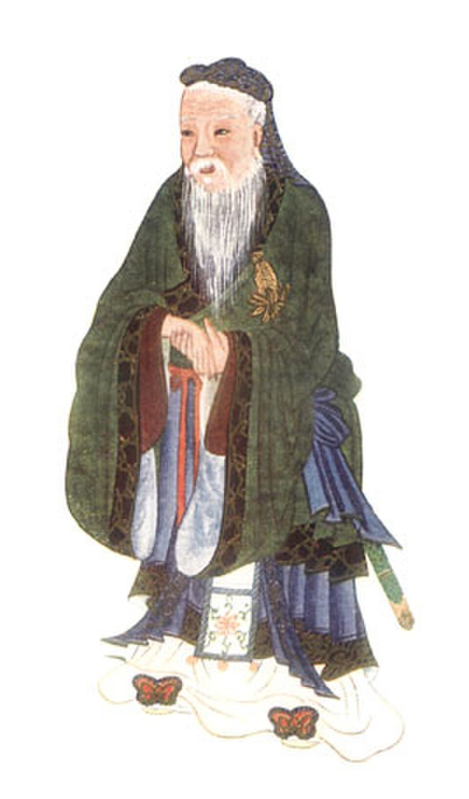
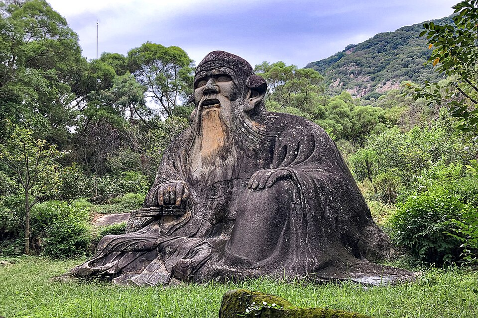
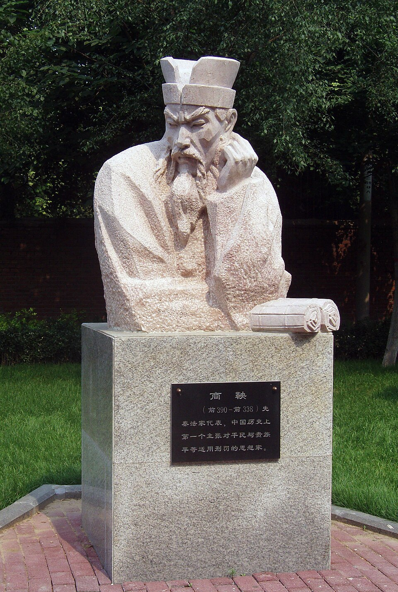
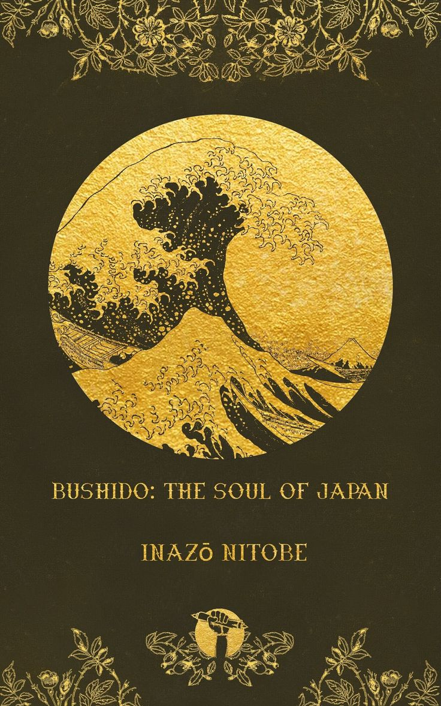
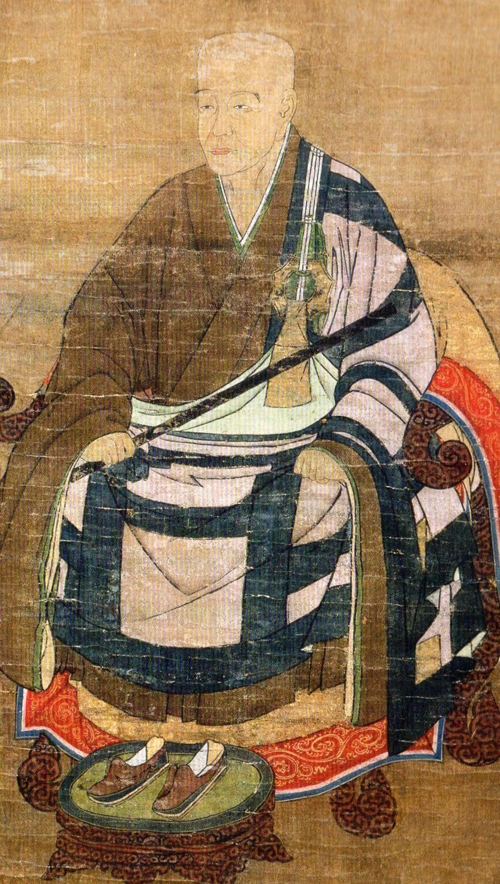

Confucianism

Confucianism is an ancient Chinese ethical and philosophical system developed from the teachings of the philosopher Confucius (Kong Fuzi) in the 6th–5th century BCE. Emerging during the chaotic Spring and Autumn period, Confucius sought to restore social and political order not through harsh laws, but through moral education, ritual propriety, and leading by virtuous example. It is fundamentally a humanist philosophy, focusing on the perfection of human character and the maintenance of harmonious relationships within the family and the state.
The philosophy was later developed and systematized by figures like Mencius (who argued human nature is inherently good) and Xunzi (who argued human nature requires rigorous molding). Over the centuries, Confucianism evolved from a philosophical school into the foundational state ideology of imperial China. It profoundly shaped the social fabrics, educational systems, and bureaucratic structures of not only China, but also Korea, Japan, and Vietnam.
Key Principles
- Ren (Benevolence) — the ultimate virtue of humaneness, compassion, and loving others
- Li (Ritual/Propriety) — the proper conduct, etiquette, and rituals that maintain social harmony
- Xiao (Filial Piety) — profound respect, obedience, and care for one's parents and ancestors
- Junzi (The Gentleman) — the ideal moral exemplar who continually cultivates his character and acts with righteousness
Major Works
- The Analects — Confucius (compiled by his disciples)
- Mencius — Mencius
- The Great Learning — Attributed to Zengzi
Influence
Confucianism established the civil service examination system in China, creating a meritocracy based on scholarly achievement rather than noble birth. Its emphasis on family loyalty, respect for elders, and education continues to heavily influence the cultural and social norms of East Asia today.
Common Misconception
Confucianism is often viewed in the West as a rigid, oppressive set of rules demanding blind obedience to authority. In its original context, however, it emphasized reciprocal obligations—a ruler or parent must be virtuous and caring to earn respect, and Confucius explicitly supported advising and correcting leaders who strayed from the moral path.
Taoism

Taoism (or Daoism) is an indigenous Chinese philosophy and religion that arose roughly concurrently with Confucianism, traditionally attributed to the legendary sage Laozi (Lao Tzu) and later expanded by Zhuangzi. Where Confucianism focuses on social structures and human relationships, Taoism turns its gaze to nature and the cosmos. It centers on the concept of the Dao (the Way)—an unnamable, formless, and eternal principle that is the source and driving force of all existence.
Taoist philosophy suggests that human suffering and societal chaos arise from our attempts to artificially control, force, or resist the natural flow of life. By practicing Wu-wei (effortless action), a person aligns their will with the Dao, achieving a state of spontaneity, tranquility, and naturalness. Over time, philosophical Taoism merged with folk religions to create a rich tradition involving alchemy, medicine, and physical disciplines aimed at prolonging life and cultivating vital energy (Qi).
Key Principles
- Dao (The Way) — the fundamental, indefinable essence and natural rhythm of the universe
- Wu-wei (Non-action) — acting effortlessly and naturally, without forcing outcomes or striving against the grain of reality
- Yin and Yang — the interconnected, complementary dualities (dark/light, passive/active) that make up all phenomena
- Ziran (Naturalness) — the state of being exactly as one is meant to be, free from artificial societal constructs
Major Works
- Tao Te Ching — Laozi
- Zhuangzi — Zhuangzi
- I Ching (Book of Changes) — An ancient divination text foundational to both Taoism and Confucianism
Influence
Taoism profoundly influenced Chinese landscape painting, poetry, and aesthetics, embedding a deep reverence for nature. It also provided the foundational philosophy for Traditional Chinese Medicine (acupuncture, herbalism), Tai Chi, Qigong, and played a crucial role in the development of Chan (Zen) Buddhism.
Common Misconception
Wu-wei is frequently misunderstood as sheer laziness or doing absolutely nothing. In reality, it means "action without friction" or being "in the zone." It describes a state of supreme efficiency and skill where a person responds perfectly to a situation without overthinking, much like water flowing effortlessly around a rock.
Legalism

Legalism (Fajia) was a highly pragmatic, ruthless, and influential political philosophy that emerged during China’s violent Warring States period (5th–3th century BCE). Developed by figures like Shang Yang and Han Feizi, Legalism completely rejected the Confucian idea that a state could be ruled by moral example or rituals. Instead, Legalists argued that humans are fundamentally driven by self-interest and cannot be trusted to act virtuously on their own.
To prevent chaos, Legalism proposed a powerful, centralized state governed by an absolute ruler and an exhaustive system of public, impartial laws. These laws were enforced with severe punishments for disobedience and generous rewards for compliance, effectively manipulating human greed and fear to serve the state. This philosophy was adopted by the Qin state, allowing Qin Shi Huang to brutally conquer his rivals and become the first Emperor of a unified China in 221 BCE.
Key Principles
- Fa (Law) — clear, public, and universally applied laws that dictate strict punishments and rewards
- Shu (Method/Tactic) — the administrative techniques and secrets a ruler uses to manage officials and prevent treason
- Shi (Power/Position) — the institutional power and authority of the throne, which commands obedience regardless of the ruler's personal morality
Major Works
- Han Feizi — Han Feizi (the most comprehensive Legalist text)
- The Book of Lord Shang — Shang Yang
Influence
Although the Qin Dynasty fell quickly due to its extreme brutality, Legalist administrative structures—such as centralized bureaucracy, standardizing laws, and suppressing rebellious nobles—became the hidden blueprint for all subsequent Chinese dynasties, operating quietly beneath a public facade of Confucian morality.
Common Misconception
Legalism is often thought of as merely sadistic tyranny. However, in the context of endless, bloody civil war, it was actually a rational, progressive attempt to create an objective system of governance. By demanding that the law apply equally to peasants and aristocrats alike, it aimed to strip power from corrupt, entrenched nobles.
Mohism

Mohism (Mojia) was founded by Mozi in the 5th century BCE and was the primary rival to Confucianism during the Warring States period. Mozi was deeply critical of the Confucian emphasis on elaborate rituals, music, and prioritizing one's own family. He viewed these practices as wasteful and the root cause of societal division and warfare. In their place, Mozi proposed a radical ethic of Jianai—universal, impartial love.
The Mohists were essentially ancient utilitarians. They argued that any action, policy, or tradition should be judged solely on whether it promotes the wealth, population, and order of the state. Because they despised aggressive warfare, Mohist philosophers became expert siege engineers, traveling between states to help defend weaker cities from imperial aggression. Although highly influential in its time, Mohism largely died out after the unification of China, overshadowed by Legalism and Confucianism.
Key Principles
- Jianai (Universal Love) — the ethical doctrine that one should care for all people equally, without distinguishing between family members and strangers
- Utilitarianism — evaluating actions based entirely on their tangible benefit to society (wealth, peace, population)
- Anti-Fatalism — the rejection of destiny, arguing that human effort and righteous action can change one's material and spiritual conditions
- Meritocracy — the belief that government roles should be given to the most capable and moral, regardless of their birth or social class
Major Works
- The Mozi — Compiled by Mozi's disciples, outlining the philosophy and detailing defensive siege warfare tactics
Influence
While it disappeared for over two millennia, Mohism was rediscovered in the late 19th and 20th centuries. Modern Chinese thinkers and political reformers revived interest in Mozi, seeing his concepts of equality, meritocracy, and utilitarianism as native Chinese precursors to modern democratic and socialist ideals.
Common Misconception
When people hear "universal love," they often imagine a romantic or highly emotional affection. For Mozi, Jianai was a cold, pragmatic, and objective concept. It simply meant that society functions best when people provide the same material care and protection to a stranger's parents and children as they do to their own, avoiding the tribalism that leads to war.
Neo-Confucianism

Neo-Confucianism was a massive intellectual revival movement that began in the Tang Dynasty and reached its zenith during the Song and Ming Dynasties (roughly 11th–16th centuries CE). For centuries, Buddhism and Taoism had dominated Chinese philosophical and spiritual life, offering profound explanations of the cosmos and the mind that ancient Confucianism lacked. Thinkers like Zhu Xi and later Wang Yangming set out to restore Confucianism by developing a comprehensive metaphysical framework that could rival its competitors.
This new movement shifted the focus from purely social rules to understanding the fundamental nature of the universe. They introduced the concepts of Li (the underlying rational principle of the cosmos) and Qi (the vital material force). Neo-Confucians argued that the same moral principle that governs the universe also exists within the human heart. By meticulously "investigating things" or practicing introspection, a person could align their mind with the cosmic order, effectively making sagehood an attainable, spiritual goal.
Key Principles
- Li (Principle) — the eternal, rational form or moral blueprint that underlies all phenomena in the universe
- Qi (Material Force) — the dynamic, physical energy or matter that gives shape to things according to the blueprint of Li
- Investigation of Things (Gewu) — Zhu Xi's method of rigorously studying the external world and classical texts to understand moral principles
- Unity of Knowledge and Action — Wang Yangming's doctrine that true moral knowledge inherently results in righteous action; one cannot truly know good without doing good
Major Works
- The Four Books — Curated and heavily annotated by Zhu Xi, replacing the Five Classics as the core curriculum
- Instructions for Practical Living — Wang Yangming
Influence
Zhu Xi's interpretation of Neo-Confucianism became the absolute, unquestioned orthodox ideology of the Chinese imperial state from the 14th century until the abolition of the civil service exams in 1905. It also profoundly shaped the philosophical, political, and social development of the Joseon Dynasty in Korea and the Tokugawa Shogunate in Japan.
Common Misconception
Because it uses terms like "Li" and "Qi," people often confuse Neo-Confucian metaphysics with Taoist mysticism. However, Neo-Confucians were fiercely rationalistic. They used these concepts not to escape the world into mystic reverie, but to ground human ethics, family loyalty, and political duty in the very fabric of the cosmos.
Kyoto School

The Kyoto School is a 20th-century Japanese philosophical movement centered at Kyoto University, founded by Kitaro Nishida and developed by thinkers like Keiji Nishitani and Hajime Tanabe. Emerging as Japan was rapidly modernizing and opening to the West, these philosophers embarked on an unprecedented intellectual project: they sought to engage deeply with Western philosophy (especially Kant, Hegel, Nietzsche, and Heidegger) using the conceptual tools and spiritual insights of Eastern traditions, particularly Zen Buddhism.
At the heart of the Kyoto School's philosophy is the attempt to overcome Western dualism (subject vs. object, mind vs. matter). They proposed the concept of "Absolute Nothingness" (Zettai Mu)—not a negative, empty void, but an infinite, dynamic field of reality out of which all being and consciousness emerge. By reframing existential questions of meaning, nihilism, and selfhood through this lens, the Kyoto School established Japanese philosophy as a highly original and formidable voice on the global stage.
Key Principles
- Absolute Nothingness (Zettai Mu) — the ultimate, unnamable ground of reality, from which all dualities (being/non-being, subject/object) arise
- Basho (Place/Field) — Nishida's concept of the "field" or contextual matrix within which absolute nothingness manifests as conscious experience
- Overcoming Nihilism — Nishitani's argument that Western nihilism must not be avoided, but passed through completely to reach the liberating emptiness of Zen
Major Works
- An Inquiry into the Good — Kitaro Nishida
- Religion and Nothingness — Keiji Nishitani
- Philosophy as Metanoetics — Hajime Tanabe
Influence
The Kyoto School successfully bridged the gap between East and West, bringing Zen Buddhist concepts into modern academic philosophical discourse. It deeply influenced Western phenomenology, existential theology, and cross-cultural dialogue. However, its legacy is complex, as some members' writings were co-opted to philosophically justify Japanese imperialism during World War II.
Common Misconception
Because it heavily relies on the term "Nothingness," Western readers often mistakenly equate the Kyoto School with pure pessimism or nihilism. In reality, "Absolute Nothingness" is a liberating, affirmative concept drawn from Buddhism. It represents the stripping away of the ego, leading to a profound, compassionate interconnectedness with all of life.
Bushidō

Bushidō, translating to "The Way of the Warrior," is the moral and behavioral code that governed the samurai class of feudal Japan. While martial traditions existed for centuries, Bushidō as a formalized philosophy crystallized primarily during the Edo period (17th–19th centuries)—ironically, a time of profound peace when samurai transitioned from battlefield combatants to aristocratic bureaucrats. The philosophy synthesized elements of native Shinto loyalty, Zen Buddhist discipline and fearlessness of death, and Neo-Confucian social ethics.
Bushidō dictates that a warrior's highest calling is total, unwavering loyalty to their feudal lord (Daimyo), alongside mastery of the martial arts, strict self-discipline, and polite, dignified behavior in all aspects of life. Central to the philosophy is the acceptance of death; a true samurai is expected to live every day as if they are already dead. This mindset removes fear, allowing the warrior to act with perfect honor, righteousness, and focus, ultimately leading to the practice of Seppuku (ritual suicide) if that honor is irreparably broken.
Key Principles
- Gi (Integrity/Justice) — doing the right thing with absolute conviction, without hesitation
- Meiyo (Honor) — possessing a profound sense of personal dignity and reputation, which is valued above life itself
- Chugi (Loyalty) — absolute, unquestioning devotion to one's master and superiors
- Yu (Heroic Courage) — bravery that is not blind violence, but intelligent and grounded in moral righteousness
Major Works
- Hagakure (In the Shadow of Leaves) — Yamamoto Tsunetomo
- Bushido: The Soul of Japan — Inazo Nitobe (A romanticized, late 19th-century text written for Western audiences)
- The Book of Five Rings — Miyamoto Musashi (Focuses more on strategy, but deeply reflects warrior philosophy)
Influence
Though the samurai class was abolished in the late 19th century, the spirit of Bushidō was deliberately woven into the fabric of modern Japanese national identity. It deeply influenced the code of conduct for the Imperial Japanese military, modern Japanese corporate culture (salaryman loyalty), and forms the ethical foundation of martial arts like Kendo, Judo, and Aikido.
Common Misconception
Many believe Bushidō was an ancient, unchanging set of laws written down at the dawn of the samurai era. In reality, during the peak periods of samurai warfare (like the Sengoku period), betrayal and shifting allegiances were common. Bushidō was largely codified and romanticized much later, serving as an idealized ethical framework for warriors who no longer had wars to fight.
Japanese Zen

While rooted in the Chinese Chan tradition, Japanese Zen evolved into a distinctly powerful cultural and spiritual force after arriving in Japan during the 12th and 13th centuries. Promulgated by masters like Eisai (founder of the Rinzai school) and Dogen (founder of the Soto school), Japanese Zen stripped away esoteric rituals and scriptural study. Instead, it emphasized rigorous, uncompromising meditation (Zazen) as the direct path to experiencing one's true nature and achieving Satori (awakening).
The two major schools took slightly different approaches. Rinzai Zen was quickly adopted by the samurai class, utilizing startling, illogical paradoxes (Koans) to violently shatter dualistic thinking and provoke sudden enlightenment. Soto Zen, championed by Dogen, focused on Shikantaza ("just sitting"), teaching that the very act of seated meditation is itself the realization of enlightenment, not merely a means to an end. In both forms, Japanese Zen emphasizes integrating deep mindfulness into every single action of daily life.
Key Principles
- Zazen — precise, intensely focused seated meditation, serving as the bedrock of all Zen practice
- Shikantaza — "just sitting," a state of pure, objectless awareness without striving for a goal
- Satori / Kensho — sudden, experiential flashes of awakening where one sees into their true, unconditioned nature
- Mushin (No-Mind) — a state of mental clarity and fluidity, free from the interference of ego and discursive thought
Major Works
- Shobogenzo (Treasury of the True Dharma Eye) — Eihei Dogen
- Zen Mind, Beginner's Mind — Shunryu Suzuki (A highly influential modern exposition for the West)
Influence
Japanese Zen completely transformed the aesthetics of Japan. By valuing simplicity, asymmetry, and the beauty of impermanence (Wabi-Sabi), Zen monks profoundly influenced the Japanese tea ceremony (Sado), flower arranging (Ikebana), rock gardening, Haiku poetry, ink painting (Sumi-e), and traditional architecture.
Common Misconception
A frequent modern misconception is that Zen is fundamentally about "relaxation" or escaping the stresses of the world. In traditional Japanese monasteries, Zen practice is notoriously strict, physically demanding, and hyper-vigilant. The goal is not passive relaxation, but cultivating a razor-sharp presence that is fully engaged with the reality of the present moment.
Explore Islamic & Persian Philosophy
Across the medieval Islamic world and Persia, philosophers engaged deeply with questions of existence, reason, knowledge, ethics, and revelation, while also engaging with earlier Greek philosophical traditions.